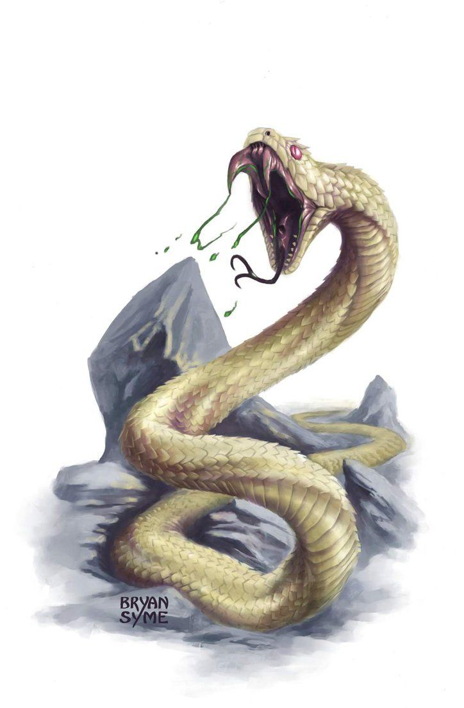

- Крохотный, Зверь, Без мировоззрения
- Класс доспеха: 13
- Хиты: 2 (1d4)
- Скорость: 30 фт., Плавая 30 фт.
-
СИЛ 2 (-4)ЛОВ 16 (+3)ТЕЛ 11 (0)ИНТ 1 (-5)МДР 10 (0)ХАР 3 (-4)
- Чувства: Слепое зрение 10 фт., Пассивная внимательность 10
- Опасность: 1/8 - 25 оп.
- Источник: «Monster manual»

Действия
- Укус. Рукопашная атака оружием: +5 к попаданию, досягаемость 5 фт., одна цель. Попадание: Колющий урон 1, и цель должна совершить спасбросок Телосложения со Сл 10, получая урон ядом 5 (2d4) при провале, или половину этого урона при успехе.